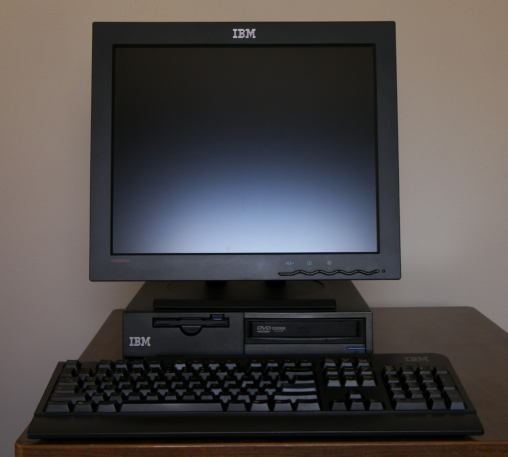

A continuación se muestra una tabla creada con etiquetas HTML5, donde se describen los principales componentes de un computador.
| Componente | Descripción |
|---|---|
| Procesador (CPU) | Es el cerebro de la computadora, ejecuta las instrucciones y procesa la información. |
| Memoria RAM | Almacena datos temporales que utiliza el sistema mientras está en funcionamiento. |
| Disco duro (HDD/SSD) | Guarda permanentemente la información y los programas del usuario. |
Estas son dos etiquetas que utilicé para representar información sobre computadoras.

Imagen ilustrativa de una computadora
Barra de progreso que representa el uso de CPU al 70%: